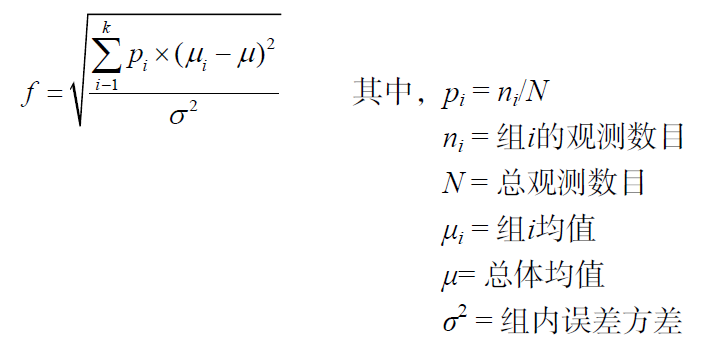

library(pwr)
pwr.t.test(d = 10/25,
sig.level = 0.05,
power = 1-0.1,
type = "one.sample",
alternative = "greater"
)
##
## One-sample t test power calculation
##
## n = 54.90553
## d = 0.4
## sig.level = 0.05
## power = 0.9
## alternative = greater11 样本量计算
样本量计算也是医学统计学中的一块重要内容，但是在课本中并没有详细介绍，今天我们说一下常见的研究设计的样本量计算。
通常样本量计算大家可能知道PASS软件，这是一个专门用来计算样本量的软件，但是也是付费的，并且没有mac版，而R语言免费，谁都可以用，不过！计算样本量我还是推荐使用PASS，因为简单好用！除了PASS外，大家还可以用gpower计算样本量哦~
在R语言中，样本量计算这一问题被称为功效分析。
在功效分析中，我们通常关注4个值：
- 样本量
- 显著性水平，也称为α（阿尔法）值，一类错误的概率
- 功效（power），1 - 二类错误的概率，也就是1-β（贝塔）
- 效应值（effect size）
计算样本量就是解方程的过程，知道其中3个就可以算出最后一个，不同研究设计用的公式是不一样的，说白了样本量计算就是套公式而已！不怕复杂的直接用计算器也能算出来。
而各种软件包括R语言不过是帮我们简化了过程，但是R语言并没有帮助我们简化效应值的计算…这个效应值计算很烦，这也是我更推荐PASS的重要原因，点点点就出来了，谁不喜欢呢？
在R语言中一般使用pwr包进行功效分析，没安装的小伙伴自行安装一下即可。
11.1 t检验的样本量计算
对于t检验，可以使用pwr.t.test(n= , d= , sig.level= , power= , type= , alternative= )计算样本量，其中： - n：样本量 - d：效应值，即标准化的均值之差，d = (μ1 - μ2) / σ，也就是（组1均值 - 组2均值）/ 标准差 - sig.level：显著性水平，默认值0.05 - power：功效 - type：检验类型：两样本t检验（two.sample），单样本t检验（one.sample），配对t检验（paired），默认两样本t检验 - alternative：双侧检验还是单侧检验，双侧（two.sided），单侧（less或者greater），默认双侧检验
11.1.1 单样本t检验（样本均数和已知总体均数比较）
使用课本例36-3的例子。
用某药治疗矽肺患者，估计可增加尿矽排出量，其标准差为25mg/L，若要求以α=0.05，β=0.1的概率，能辨别出尿矽排出量平均增加10mg/L，问需要多少矽肺患者做实验？
n = 54.90553，结果和课本一模一样！是不是非常简单？
单样本t检验也可以使用R自带的函数进行计算：
power.t.test(delta = 10,
sd = 25,
sig.level = 0.05,
power = 1-0.1,
type = "one.sample",
alternative = "one.sided"
)
##
## One-sample t test power calculation
##
## n = 54.90553
## delta = 10
## sd = 25
## sig.level = 0.05
## power = 0.9
## alternative = one.sided结果都是一样的~
11.1.2 两样本t检验（两样本均数比较）
使用课本例36-4的例子
在做两种处理动物冠状静脉窦的血流量实验时，比较A处理动物和B处理动物的平均血流量增加，设两处理的标准差相等。若要求以α=0.05，β=0.1的概率，达到能辨别出两者增加的差别是其标准差的60%，需要多少实验动物？
感觉和小学做应用题差不多… 两者增加的差别是其标准差的60%，也就是 (μ1 - μ2) / σ = 0.6。
library(pwr)
pwr.t.test(d = 0.6,
sig.level = 0.05,
power = 1 - 0.1,
type = "two.sample",
alternative = "two.sided"
)
##
## Two-sample t test power calculation
##
## n = 59.35155
## d = 0.6
## sig.level = 0.05
## power = 0.9
## alternative = two.sided
##
## NOTE: n is number in *each* groupn = 59.35155，和课本结果一模一样，每组需要大约60例！
两样本t检验也可以使用R自带的函数power.t.test()进行计算，但是例题中的这种情况刚好没有给出具体的两组间差值和标准差，所以就不能用了。
11.2 多样本均数比较
使用课本例36-5的例子。
拟用4种方法治疗贫血患者，估计治疗后血红蛋白增加的均数分别为18,13,16,10，标准差分别为10,9,9,8，设α=0.05，β=0.1，若要得出有差别的结论，每组需要多少例？
这是一个完全随机设计多样本比较的方差分析的例子，相信大家都能看出来！
但是，在R里面计算种类型的样本量非常困难，原因在于效应量effect size很难计算出来，最终结果也和课本上面的公式计算出来的样本量不一样，所以我推荐用PASS软件，点点点即可！
这种情况使用函数pwr.anova.test(k= , n= , f= , sig.level= , power= )计算，其中 f是效应量effect size，计算方法如下：

k是组数，其余的和t检验的相同。
首先我们要计算f值，但是根据这个公式，很明显是计算不出来的！
如果使用R自带函数power.anova.test(groups = NULL, n = NULL, between.var = NULL, within.var = NULL,sig.level = 0.05, power = NULL)函数计算，因为无法计算within.var，所以也是行不通的。
还是乖乖用PASS吧…
如果有大佬知道怎么计算，欢迎留言告知~
11.3 样本率和已知总体率的比较
使用课本例36-6的例子。
已知常规方法治疗某种病的有效率是80%，现试验一种新的额治疗方法，预计有效率是90%，设α=0.05，β=0.1，问需要多少病例才能发现两种方法的有效率有10%的差别？
# 首先计算h值（effect size），pwr包自带了函数，根据两个率可计算，
# h的计算使用的是这个公式：2*asin(sqrt(0.9))-2*asin(sqrt(0.8))
ES.h(0.9,0.8)
## [1] 0.2837941
# 然后进行样本量计算
pwr.p.test(h = ES.h(0.9,0.8),
sig.level = 0.05,
power = 1-0.1,
alternative = "greater"
)
##
## proportion power calculation for binomial distribution (arcsine transformation)
##
## h = 0.2837941
## n = 106.3315
## sig.level = 0.05
## power = 0.9
## alternative = greater得到的结果和课本差别有点大，课本是137.1，而我们的结果是106，主要是由于计算方法不同，建议对于此类设计的样本量计算，还是直接套课本公式或者使用PASS软件。
11.4 两独立样本率的比较
使用课本例36-7的例子。
初步观察甲乙两药对某病的疗效，甲药有效率为60%。乙药有效率为85%，现拟进一步做治疗实验，设α=0.05,1-β=0.9，问每组需要多少病例？
下面演示使用pwr包计算：
# 首先计算h值，pwr包自带了函数，根据两个率可计算
ES.h(0.85,0.60)
## [1] 0.5740396
# 然后进行样本量计算
pwr.2p.test(h = ES.h(0.85,0.60),
sig.level = 0.05,
power = 1-0.1,
alternative = "two.sided"
)
##
## Difference of proportion power calculation for binomial distribution (arcsine transformation)
##
## h = 0.5740396
## n = 63.77382
## sig.level = 0.05
## power = 0.9
## alternative = two.sided
##
## NOTE: same sample sizesn = 63.77382，和课本是一模一样的结果！
这种情况下用R自带的``也是很好用的：
power.prop.test(p1 = 0.85,
p2 = 0.6,
sig.level = 0.05,
power = 1-0.1,
alternative = "two.sided"
)
##
## Two-sample comparison of proportions power calculation
##
## n = 64.93465
## p1 = 0.85
## p2 = 0.6
## sig.level = 0.05
## power = 0.9
## alternative = two.sided
##
## NOTE: n is number in *each* group算出来结果是64.93465，和课本差别不大~
11.5 多样本率的比较
使用课本例36-8的例子。
拟观察3种方法治疗消化性溃疡的效果，初步估计甲法有效率为40%，乙法50%，丙法65%，设α=0.05，β=0.1，试估计样本量？
很明显属于行x列表资料的卡方检验！所以我们使用pwr.chisq.test()函数进行计算样本量。
首先我们要计算effect size：
# 甲法 乙法 丙法
prob <- rbind(c(0.4, 0.5, 0.65), # 有效率
c(0.6, 0.5, 0.35)) # 无效率
# pwr包自带的这个函数专门用于此种情况的effect size计算
ES.w2(prob/3) # 有几组就除以几，这里需要理解列联表资料的一些指标计算
## [1] 0.2055947这样我们就得到effect size了，然后就可以计算样本量了。
pwr.chisq.test(w = ES.w2(prob/3), # effect size
df = 2, #（3-1）*（2-1）= 2
sig.level = 0.05,
power = 1-0.1
)
##
## Chi squared power calculation
##
## w = 0.2055947
## N = 299.3655
## df = 2
## sig.level = 0.05
## power = 0.9
##
## NOTE: N is the number of observations最终得到的结果是一共需要299例，课本是297例，基本一样~
11.6 直线相关分析
使用课本例36-9的例子。
根据以往经验，血硒与发硒含量间直线相关系数为0.8，若想在α=0.05，β=0.1的水平上得到相关系数有统计学意义的结论，应调查多少人？
pwr.r.test(r=0.8,
sig.level = 0.05,
power = 1-0.1,
alternative = "two.sided")
##
## approximate correlation power calculation (arctangh transformation)
##
## n = 11.16238
## r = 0.8
## sig.level = 0.05
## power = 0.9
## alternative = two.sidedn = 11.16238，结果和课本一样~
OK，以上就是使用R语言计算样本量的例子。可以看到大部分都是可以很简单的计算出来，但是在方便快捷性上还是差PASS软件太远了，对于此类样本量计算的问题，可能PASS是更好的选择。